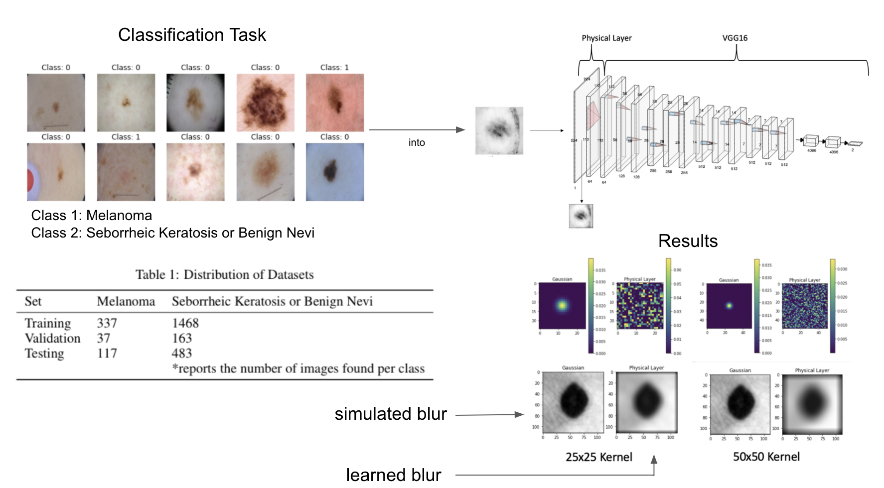

| Paper PDF |

|
In 2020, skin cancer is the most prevalent form of cancer in the United States. However, the survival rate is an astonishing 99% when detected early. The following experiment explores the possibility of using a convolutional neural network (CNN) to aid physicians in the diagnosis and recognition of melanomas using solely image recognition to capture and differentiate certain features of a skin lesion that may not be immediately visible to the human eye. Using the ISIC 2017 Skin Lesion dataset, a model combining Visual Geometry Group 16 (VGG16) and a physical layer to simulate the effect of blurring was trained on a variety of images containing melanomas, seborrheic keratoses, and benign nevus. The final results for this model show that blurring does not have a negative effect and include an average area under the curve (AUC) of 82.5% and maximum average loss of 0.0324. This project was inspired by the ISIC 2017 Skin Lesion Challenge . |
|
|
| Paper: |
| Code and Data: |